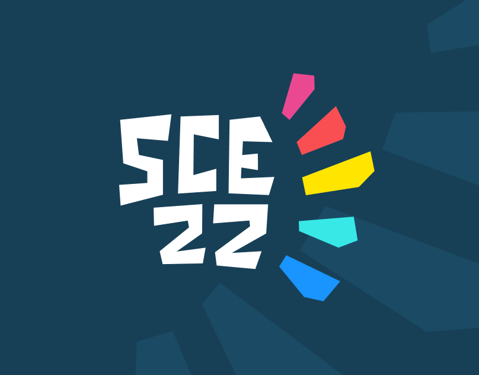
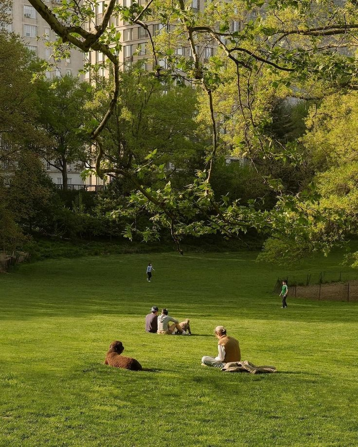

©2026 Wafiq Hasan
Hi! I am Wafiq
A Multidiscplinary designer ✏️ based in Jakarta
I believe in form follows function and a little bit of fun🌲
Let's Collaborate!
📩
i think there's something beautiful about not having everything figured out yet, even when it feels confusing sometimes 🌱 still figuring things out


 A Multidiscplinary designer ✏️ based in Jakarta
I believe in form follows function and a little bit of fun🌲
A Multidiscplinary designer ✏️ based in Jakarta
I believe in form follows function and a little bit of fun🌲